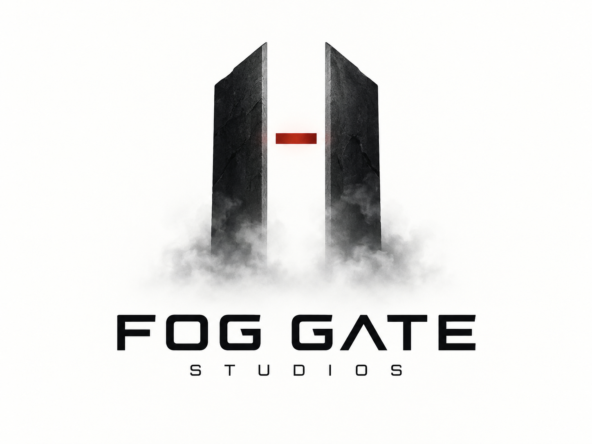

21 SEP 2026 · THE GIRL IN SEIRAN
AOI enters the next 3D refinement pass.
The character foundation is moving from blockout into a more human silhouette, with the atmosphere of Seiran guiding every detail.
Read the project log →
Fog Gate StudiosIndependent Game StudioFOG GATE STUDIOS
Games · Worlds · Humanity at the edge.
Silence is a place too.
01 · News & updates
Development notes, visual experiments and quiet progress from the worlds Fog Gate Studios is bringing to life.
21 SEP 2026 · THE GIRL IN SEIRAN
The character foundation is moving from blockout into a more human silhouette, with the atmosphere of Seiran guiding every detail.
Read the project log →18 SEP 2026 · VISUAL DIRECTION
Our new direction brings together supernatural tension, precise light and restrained futuristic signals.
About the direction →IN PROGRESS · PRODUCTION
We are expanding the studio slate while protecting the slow, deliberate craft behind every unsettling place.
See the slate →02 · Our games
The Girl in Seiran is our debut project — a story-driven psychological horror experience currently in active development.
 In development
In developmentFOG GATE STUDIOS · DEBUT TITLE
“Some memories should stay buried.”
A dark narrative journey surrounding Seiran Hospital. Aoi is drawn through memory, fear and a mystery that refuses to remain buried, in a world where what is remembered may be just as dangerous as what was forgotten.
Enter Seiran →FOG GATE STUDIOS · UNANNOUNCED
A new supernatural world is forming beyond the first gate.
FOG GATE STUDIOS · IN CONCEPT
Another signal is waiting in the dark. Details will follow.
03 · Our vision
We make the unseen feel close.
Fog Gate Studios is an independent studio for psychological horror, supernatural stories and worlds that continue to echo after the screen goes dark.
We work from atmosphere outward: memory before exposition, character before spectacle, and small human details inside impossible places.
Our goal is to create games with a clear identity, a patient sense of dread and the freedom to leave questions lingering.